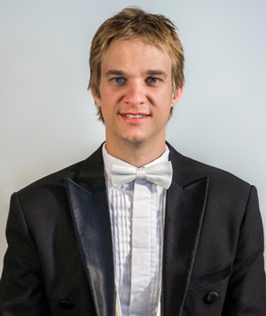
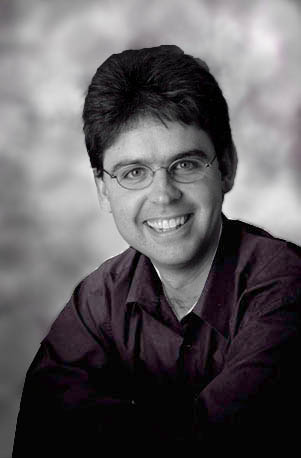
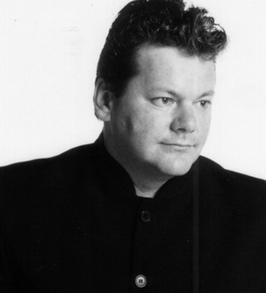

Guest Conductors
David Lawrence
Conductor

DESCRIPTION NOT AVAILABLE
Mario Dobernig
Conductor
Conductor Mario Dobernig grew up in a small village in the Austrian Alps before establishing his professional career as a percussionist in Graz (Austria) and Helsinki (Finland) where he worked extensively with many chamber orchestras and with ensembles such as the Graz Opera, Finnish Radio Symphony Orchestra, the Tapiola Sinfonietta and the Avanti! chamber orchestra.
Mario graduated from the Art University Graz and the Sibelius Academy Helsinki. He also holds a Masters degree in Musicology from the University of Helsinki. Mario moved to Melbourne to pursue his conducting studies with John Hopkins OBE at the University of Melbourne, where he completed a Master of Music in Conducting in 2009. He is currently completing his PhD at the University of Melbourne, where he produces a performance edition of Peggy Glanville-Hicks’s opera Nausicaa.
In 2011, Mario conducted Stravinsky’s Histoire du Soldat for the Woodend Winter Arts Festival, which was broadcasted on ABC classic FM. Mario has conducted ensembles at the University of Melbourne, the Victorian College of the Arts Symphony Orchestra, the Youth Philharmonic Melbourne, the Ballarat Symphony, the Ballarat Wind Orchestra, the Preston Symphony and the Kooyong Chamber Players. Since 2012 Mario is the resident conductor of the Preston Symphony and the Musical Director of Victoria Chorale. He really enjoys making music with the Barrier Reef Orchestra.
Mark Shiell
Conductor
Mark has guest-conducted ensembles including the Melbourne Symphony Orchestra, West Australian Symphony, Moscow Symphony Orchestra, State Academic Symphony Orchestra of St. Petersburg, Victorian Opera, Orchestra Ensemble Kanazawa, Canberra Symphony Orchestra, Sydney Sinfonia, Melbourne Youth Orchestra, University of Melbourne Symphony Orchestra and the Orchestras of the State Music Camps in Melbourne and Adelaide.
Currently he serves as Artistic Director and Principal Conductor of Zelman Symphony Orchestra, the Ballarat Symphony and the Macquarie Philharmonia.
His love of community and youth music has kept him busy contributing to the growth and development of important initiatives in both of these areas here in Australia. Most recently, Mark developed a Regional Orchestra Weekend for ensembles from across Victoria to meet and perform together, with the aim to make this an annual event.
Mark is also passionate about the education and training of future conductors, and has been frequently involved as a guest teacher of the Masters of Conducting students at the Melbourne Conservatorium in 2015.
Sean O'Boyle
Conductor
Australian composer and conductor, Sean O’Boyle, has conducted recordings and concerts with many leading Australian and international orchestras, including the Adelaide, West Australian, Melbourne and Tasmanian Symphony Orchestras, The Queensland Orchestra, the Dortmund Konzert in Germany, the Lexington Philharmonic in the USA, Auckland Philharmonia, BBC Concert Orchestra, Malaysian Philharmonic Orchestra and Orchestra Victoria.
Sean’s compositions & orchestrations have been performed by the major Australian orchestras and by international orchestras including the Berliner Philharmoniker, Dallas Symphony Orchestra, Fort Worth Symphony Orchestra, Auckland Philharmonia, Malaysian Philharmonic and the Cincinnati Pops Orchestra. He has also written works for Queensland Ballet, Opera Queensland, State Library of Queensland Opening, Centenary of Federation, Q150 Celebrations and for the Brisbane Festival.
Richard McIntyre, OAM
Conductor

Richard McIntyre sustains a long and distinguished career as bassoonist, music educator, conductor and arranger, and has focussed this considerable breadth and diversity on his work at the ANU School of Music for over a quarter of a century. One of Australia’s most respected and successful bassoon teachers at all levels, his teaching places great emphasis on the establishment of a close personal relationship with each one-to-one student, and on the development of a thorough understanding of the instrument and its techniques, the specifics of musical fabric and effect, and the various musical functions which the bassoon fulfils in varied styles and repertoires. This approach has yielded a remarkably high proportion of graduates who have established successful full-time careers as professional musicians both within Australia and overseas, as members of prominent orchestras, free-lancers, specialists in historically-informed performance on period instruments, instrumental teachers, and members of the armed services.